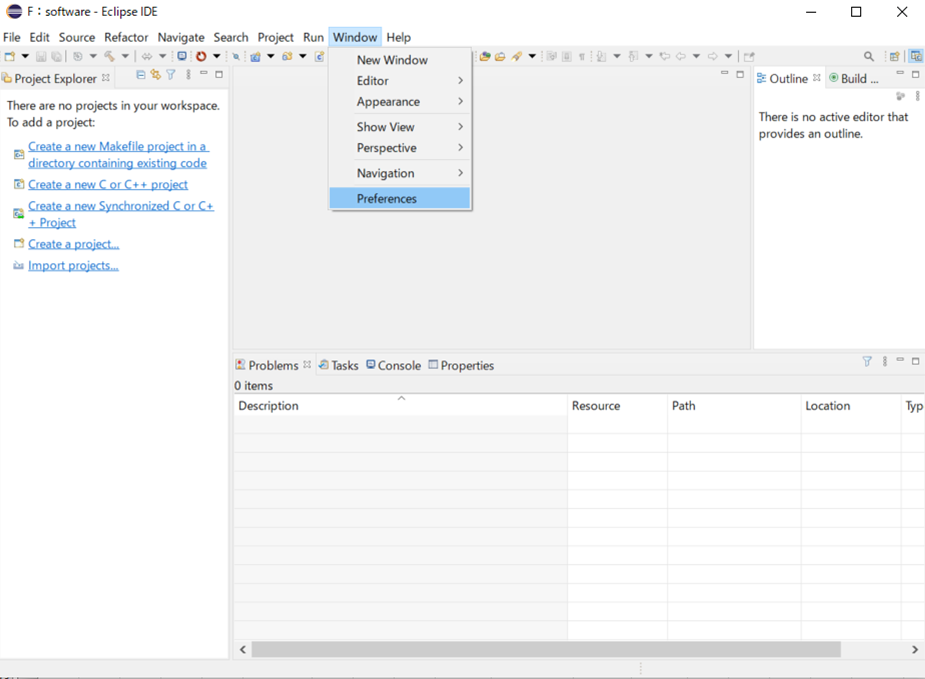
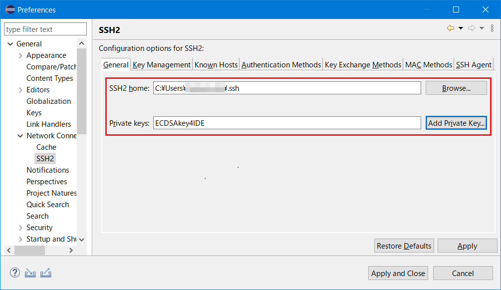
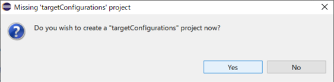
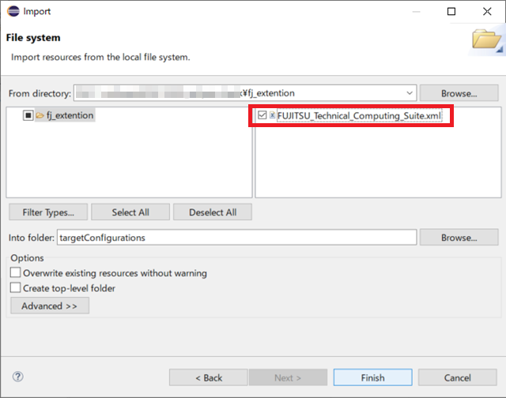
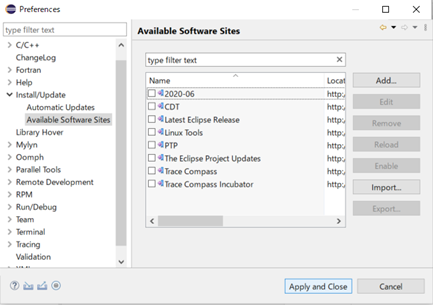
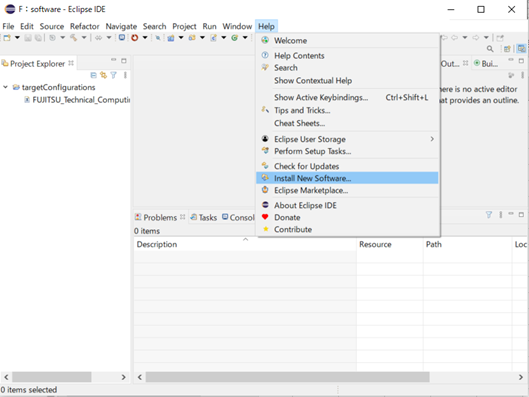
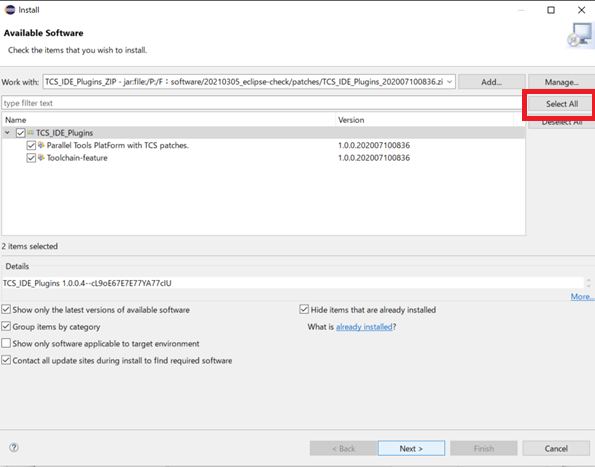
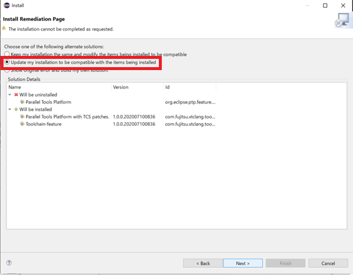
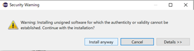

The integrated development environment is a collective term for the “Eclipse IDE for Scientific Computing” package provided by the Eclipse Foundation and extensions for the “Technical Computing Suite”.
“Eclipse IDE for Scientific Computing” package is called as Eclipse in below.
For more details, please refer to EclipseFoundation’s official website (https://www.eclipse.org).
Supporting extended function to “Technical Computing Suite” is called as Fujitsu extended function in below.
Please refer to the Manual “IDE User’s Guide” for building and job submission using the Fujitsu extension function.
Attention
Eclipse, explained in this section, is using “Eclipse IDE 2020-06 R Packages”. Procedures and screens may differ depending on the version of Eclipse, so please read appropriately.
The Eclipse glossary used in this section is as following.
For more details, please refer to Eclipse’s Help and Eclipse Foundation official website.
Glossary
Description
Work bench (Workbench)
Indicates the whole part of Eclipse main screen.
View (View)
Indicates the sub windows shown on work bench. At the view, there are unique tool bar and the view having menu.
Perspective (Perspective)
Defines a set of views to be displayed in the workbench and a layout.
Work space (Workspace)
The workspace is a place to save development assets and user’s work status, and save the status of work performed by the user and workbench setting information. You can create multiple workspaces, but you can only open one workspace at a time in the workbench.
Project (Project)
Development assets are managed in the workspace in units called projects. You can create multiple projects in a workspace.
Tool chanin (Toolchain)
Creates binary from source code and points the gathering of tools conposed of editor, compiler, assembler and Linker.
Synchronized project (Synchronized project)
A synchronized project consists of files that are mirrored on the local system and one or more remote systems. Editing is done on the local system, and each file is synchronized with the active remote system when it is modified, created, or deleted.
In this manual, the login node corresponds to the remote system, henceforth referred to as the login node. The terminal corresponding to the local system is called the client machine.
From Eclipse Foundation official website, install “Eclipse IDE for Scientific Computing” to preferred place.
To install, there are two ways : Downloading “Eclipse IDE for Scientific Computing” from the official website or select “Eclipse IDE for Scientific Computing” on installing package selection screen by using Eclipse Installer.
See also
For more details, please refer to the following Eclipse Foundation official website.
Eclipse starts and the screen of specifying work space is shown. Specify the directory where you want to create a work space to [Workspace]. If specified directory doesn’t exist, it will be created automatically. After setting [Workspace], click on [Launch].
If [Welcome] view is displayed, it is not used so please close the view.
Initial screen is shown.
3.1.13.3.2. Installation of Fujitsu extensiton function¶
We describe about how to install Fujitsu extention function.
This work should be executed when creating a new of Eclipse work space.
From Eclipse menu bar, select [Window] ‣ [Preference].

From [Preferences] screen’s left-paine, select [General] ‣ [Network Connections] ‣ [SSH2] and register the private key in Eclipse.

Item
Value
SSH2 home
Click [Browse…] button and select the path that contains the private key.
Private keys
Click [Add Private Key…] button and enter the file name of the private key.
Attention
Please use the private key of ECDSA (NIST P 521). Ed25519 and RSA private keys cannot be used in eclipse.
If eclipse is using RSA key, you will not be able to connect to the login node in the future.
When recreating the private key and public key pair, the public key registration is required. For details, please refer to “4.4.2 Public key registration” in Users Guide - Use and job execution -.
3．Select [Apply and Close].
From Eclipse menu bar, select [Window] ‣ [Preference].
From [Preferences] screen’s left-paine, select [Remote Development] ‣ [Remote Connections] and click on [Add].
Set the required information to [New Connection] screen and click on [Finish].
[New Connection] screen setting contents are as following.
Item 1
Item 2
Setting contents
Connection name
Specifies [Remote Connection] identification name. Specify the preferred name.
Host information
Host
Specifies login node’s host name login.fugaku.r-ccs.riken.jp.
Host information
User
Specifies login user name to login node.
Host information
・Public key based authentication
・Password based authentication
Selects the authentication firection to use when connecting to login node.
Public key based authentication
Passphrase
Input the passphrase of your private key.
Host information
Advanced
Extended setting. please set on demand.
Confirm if the setting contents to [Remote Connections] is added.
Select the added setting and click on [Open].
Make sure that the Status is refeshed as “open” and click [Apply and Close] then close the screen.
Arranging file is requred work in the both of login node and client machine.
Expand the idefiles.zipfile to any location on the login node.
Rename the eclipsesettingsdirectory to the .eclipsesettings derectory and copy it directly under the /home/groupname/username/directory on the login node.
Transfer the idefiles.zipfile to the client machine and extract it to any location.
Import the required setting file to use Fujitsu extension function to Eclipse.
Display [Project Explorer] view. [Project Explorer] view can be displayed by selecting menu bar’s [Window] ‣ [Show View] ‣ [Project Explorer].
Select menu bar’s [Files] ‣ [Import…].
From [Import] screen’s Select an import wizard, select [Target System Configrations] ‣ [Target Configration from Plug-in] and click on [Next>].
From pull-down menu, select [Generic PBS Batch] and click on [Finish].
On targetConfiguratons project creation selection screen, click on [Yes].

Make sure that [targetConfigurations] is added on [Project Explorer] view and select [targetConfigurations].
From menu bar, select [File] ‣ [Import…].
On [Import] screen, select [General] ‣ [File System] and click on [Next >].
click on right side of [From directory] ‘s [Browse…], specify fj_extention directory expanded in Arrangement of Fujitsu extention function file. After specification, the selected directory and the files in the directory are displayed in the box below.
Put check in the FUJITSU_Technical_Computing_Suite.xml file of right side of the box and confirm that “targetConfigrations” is specified at [Info folder] under box.
If “targetConfigrations” is not specified, click on [Browse…] on right side and select “targetConfigrations” from [Import into Folder] screen. After setting is done, click on [Finish].

To [Project Explorer] view’s [targetConfigurations], confirm if FUJITSU_Technical_Computing_Suite.xml is added.
[Project Explorer] view’s GenericPBSBatch(1).xml is no longer used, so from [Project Exploler] view, right-click on GenericSLURMBatch(1).xml and select [Delete] and delete.
Check if there is no problem on the confirmation screen and click on [OK].
Select [Install/Update] from the left pane in the [Preferences] window, uncheck [Verify provisioning operation is compatible with currently running JRE], and click the [Apply] button.
Expand [Install/Update] from the left pane in the [Preferences] window and select [Available Software Sites]. Uncheck all checkboxes under [Name] and click the [Apply and Close] button.

Attention
Do not apply updates to the software installed in Eclipse.
Also, do not install new software in Eclipse except the one described in this section.
Click [Help] ‣ [Install New Software] on the menu bar.

Click the [Add] button in the [Install] window.
Set the necessary information in the [Add Repository] window, and click the [Add] button.
Item Name
Setting Details
Name
Specify an arbitrary name.
Location
Click the [Archive] button, and select the installation package TCS_IDE_Plugins_YYYYMMDDhhmm.zip, which is located in a local directory.
The installation package is stored in the “patches” directory of files for Fujitsu extended functions.
The window displays a list of software that can be applied to Eclipse. Click the [Select All] button to select all, and click the [Next] button.

Select [Update my installation to be compatible with the items being installed], and click [Next].

The window displays the software to be installed. Confirm that “Parallel Tools PlatForm with TCS patches” and “Toolchain-feature” are to be installed, and click the [Next] button.
Select [I accept the terms of the license agreement], and click the [Finish] button.
The security warning screen appears. Click the [Install anyway] button.

You are asked whether to restart the IDE. Click the [No] button.
Then click the X button in the upper right corner of Eclipse to exit Eclipse.
Confirm that the software is correctly installed in Eclipse.
Click [Help] ‣ [About Eclipse IDE] ‣ [Installation Details] on the menu bar. Confirm that the list on the [Installed Software] tab includes the two specified software names.
See also
If you don’t see the softwares, try the following:
Start Eclipse by using “eclipse -clean” from the terminal or command prompt, and confirm [Installed Software].
3.1.13.4. Private key/Public key creation for Eclipse¶
Provides step-by-step instructions on how to create an ECDSA key pair (public/private). You must install the terminal emulator PuTTY (Patty) before using puttygen.
Execute a command ssh-keygen on the user’s device, create a private/public key pair.
Start terminal and execute a command ssh-keygen.
If Windows, start command prompt (Windows System tools ‣ command prompt
If Mac(OS X), start Terminal(Application ‣ Utility ‣ Terminal) and execute a command ssh-keygen.
If UNIX/Linux, start terminal emulator and execute a command ssh-keygen.
[terminal]$ ssh-keygen-tecdsa-b521-mPEM
Generating public/private ecdsa key pair.Enter file in which to save the key (C:\Users\name/.ssh/id_ecdsa):Enter passphrase (empty for no passphrase): # Enter passphraseEnter same passphrase again: # Re-enter the same passphraseYour identification has been saved in C:\Users\name/.ssh/id_ecdsa.Your public key has been saved in C:\Users\name/.ssh/id_ecdsa.pub.The key fingerprint is:SHA256:fMxUePmrQnAzHlQw531SdYV+hFD0iChkVf1cuXuVEuw name@hostnameThe key's randomart image is:+---[ECDSA 521]---+| o.+=B*ooO|| o o*o=+=+|| ..o.+o=+*|| ..== Eo==|| S+++ .oo|| .o ...|| . . .|| . . || . |+----[SHA256]-----+
Note
Set a passphrase that is difficult for others to guess, just like a password. Please be sure to set a passphrase. We recommend a passphrase length of at least 15 characters.
Once execute ssh-keygen, two types are created: a private key (id_ed25519) and a public key (id_ed25519.pub) on .ssh directory under the home directory.
Register the public key (id_ed25519.pub) in the login node using the Fugaku website.
Register the private key (id_ed25519) in the Eclipse.
Copy the displayed contents on “Public key for pasting in to OpenSSH authorized_keys file:” to the clip board (It is recommended to paste on the notepad).
The contents pasted on the clip board (Public key) is registered with using the Fugaku website.
Input a passphrase to both “Key passphrase” and “Confirm passphrase”. After inputting, click “Save private key” and save the private key. The file saved here is used when you want to reconfirm the public key.
Attention
Set a passphrase that is difficult for others to guess, just like a password. Please be sure to set a passphrase. We recommend a passphrase length of at least 15 characters.
Select [Conversions] ‣ [Export OpenSSH key] to save the private key in a file in a format that can be used by Eclipse.
Enter the filename where you want to store the private key in “File name (N)” and click the “Save(S)” button. The private key is stored. Eclipse uses the filename you enter here.


{kind=link}